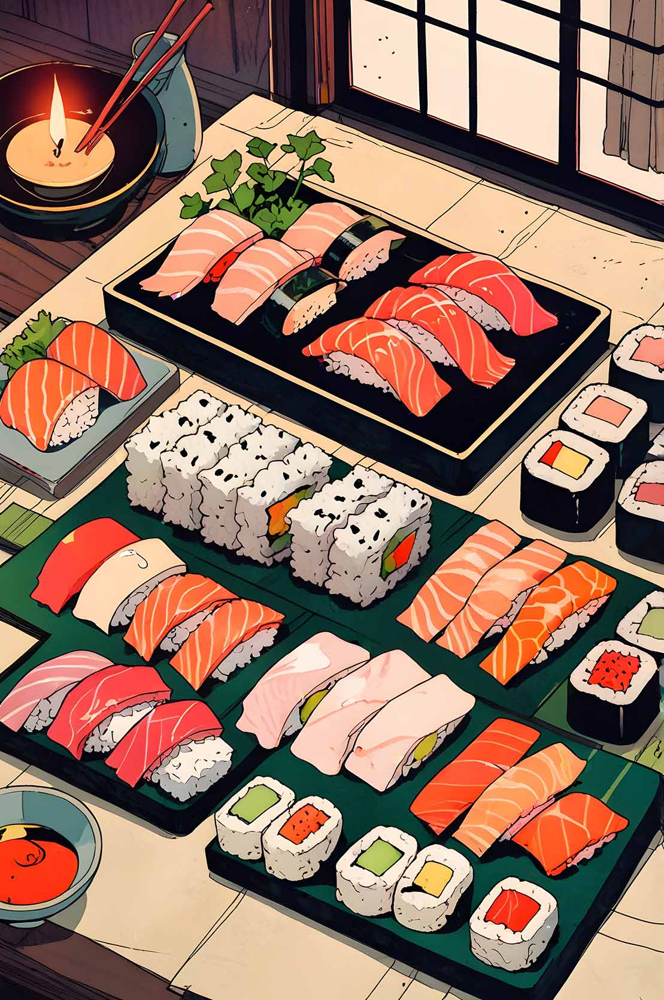
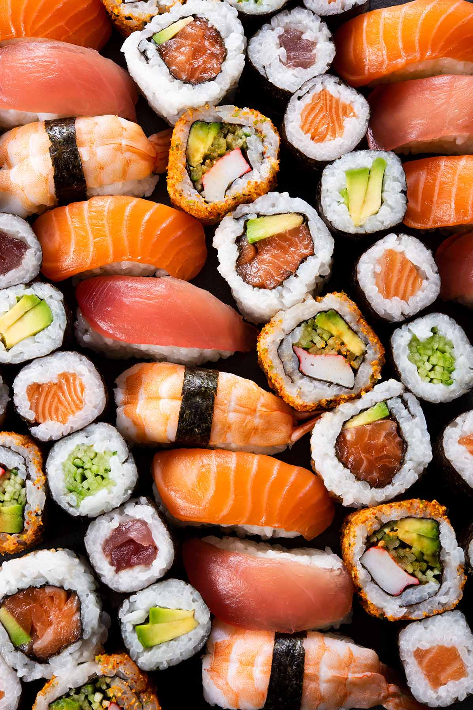

-

WHAT IS SUSHI?
Sushi (すし, 寿司, 鮨, 鮓) is a Japanese dish of prepared vinegared rice (鮨飯, sushi-meshi), usually with some sugar and salt, plus a variety of ingredients (ねた, neta), such as vegetables, meat, or most commonly, seafood, which may be raw or cooked. There are many styles of sushi, and its presentation varies widely, but the one key ingredient is "sushi rice", also referred to as shari (しゃり), or sumeshi (酢飯).
The modern form of sushi is believed to have been created by Hanaya Yohei, who invented nigiri-zushi, the most commonly recognized type today, in which seafood is placed on hand-pressed vinegared rice. This innovation occurred around 1824 in the Edo period (1603–1867). It was the fast food of the chōnin class in the Edo period.
Sushi is traditionally made with medium-grain white rice, although it can also be prepared with brown rice or short-grain rice. It is commonly prepared with seafood, such as squid, eel, yellowtail, salmon, tuna or imitation crab meat. Certain types of sushi are vegetarian. It is often served with pickled ginger (gari), wasabi, and soy sauce. Daikon radish or pickled daikon (takuan) are popular garnishes for the dish.
Sushi is sometimes confused with sashimi, a dish that consists of thinly sliced raw fish or occasionally meat, without sushi rice.
-

SUSHI COMES TO USA
The increasing popularity of sushi worldwide has resulted in variations typically found in the Western world but rarely in Japan. A notable exception to this is the use of salmon, which the Japanese have eaten since prehistory, though it often contains parasites and must be cooked or cured. The first Norwegian salmon was imported into Japan in 1980, accepted conventionally for grilling, not for sushi. Salmon sushi did not become widely accepted in Japan until a successful marketing partnership in the late 1980s.
Other sushi creations to suit the Western palate were initially fueled by the invention of the California roll, which uses imitation crab, avocado, and cucumber. Uramaki is a medium-sized cylindrical style of sushi with two or more fillings and differs from other makimono because the rice is on the outside. Examples of variations include the rainbow roll, caterpillar roll, and rock and roll.
In Japan, uramaki is an uncommon type of makimono, as sushi is traditionally eaten by hand, making the outer layer of rice difficult to handle. American-style makizushi rolls inspired by futomaki are a popular type of sushi within the United States. Other rolls may include ingredients such as spicy tuna, chicken teriyaki, cucumber, and avocado. Sometimes, rolls are made with brown rice or black rice, known as forbidden rice.
-
SUSHI HISTORY
A dish known as narezushi (馴れ寿司, 熟寿司, "matured fish"), stored in fermented rice for possibly months at a time, has been cited as one of the early influences for the Japanese practice of applying rice on raw fish. Narezushi is also called honnare, meaning "fully fermented," as opposed to namanare, meaning "partially fermented," a type of sushi that appeared in the Muromachi period. Fermented fish using rice, such as narezushi, originated in Southeast Asia where it was made to preserve freshwater fish, possibly in the Mekong River basin. The lacto-fermentation of the rice prevents the fish from spoiling. Pickling was a way to preserve the excess fish and guarantee food for the following months, and narezushi became an important source of protein for Japanese consumers. The term sushi literally means "sour-tasting," as the overall dish has a sour and umami or savory taste. Narezushi still exists as a regional specialty, notably as funa-zushi from Shiga Prefecture.
Until the early 19th century, sushi slowly changed with Japanese cuisine. During the Muromachi period, the Japanese invented a style of sushi called namanare or namanari, which means "partially fermented." With the invention of namanare, sushi changed from a preserved fish food to a food where fish and rice are eaten together.
During the Edo period, a third type of sushi, haya-zushi (早寿司, "fast sushi"), was developed. Haya-zushi differed from earlier sushi in that instead of lactic fermentation of rice, vinegar was mixed with rice to give it a sour taste. Many types of sushi known in the world today, such as chirashizushi, inarizushi, makizushi, and nigirizushi, were invented during this period.
Today's style of nigirizushi (握り寿司, "hand-pressed sushi"), consisting of an oblong mound of rice with a slice of fish draped over it, became popular in Edo (contemporary Tokyo) in the 1820s or 1830s. The sushi rice of this period was about three times the size of today's nigirizushi. The dish was originally termed Edomae zushi as it used freshly caught fish from the Edo-mae.